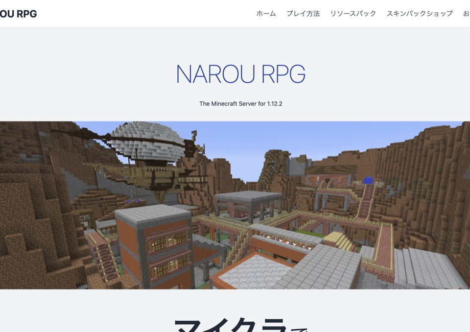
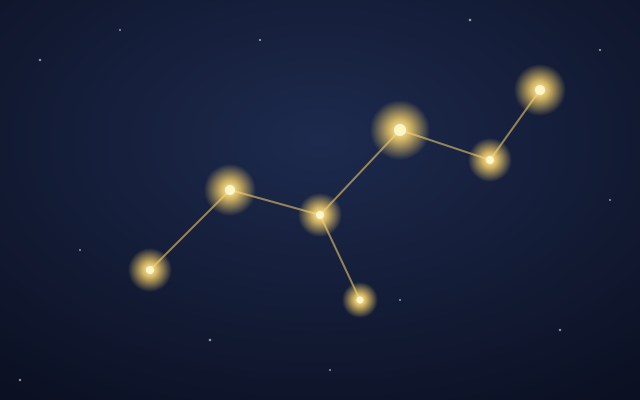
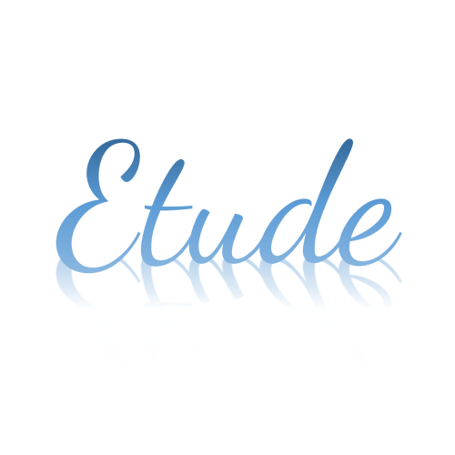
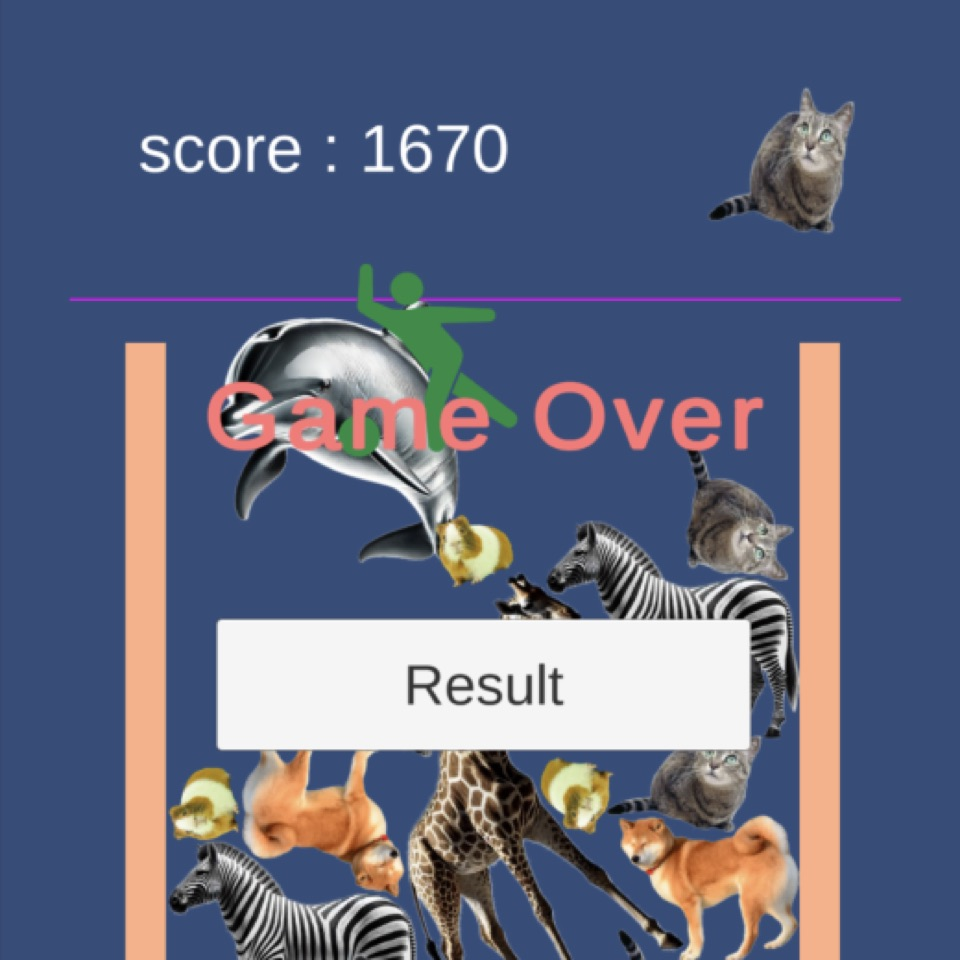
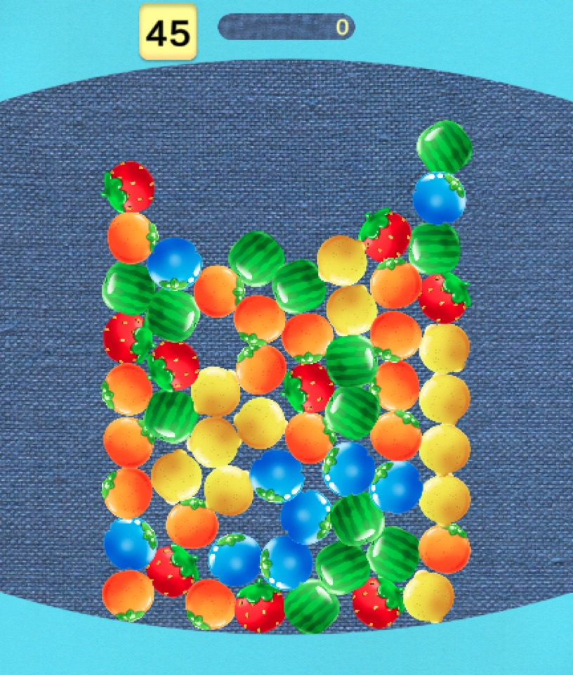
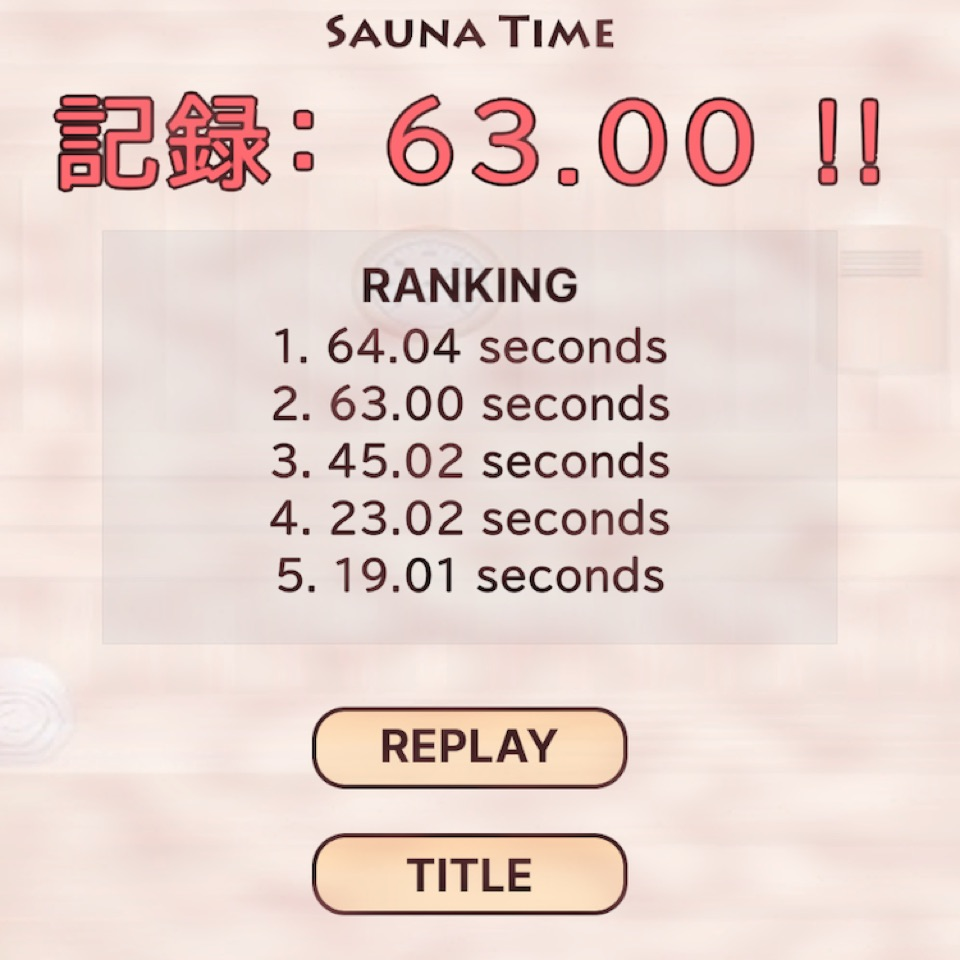
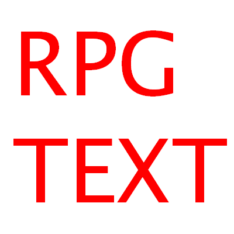
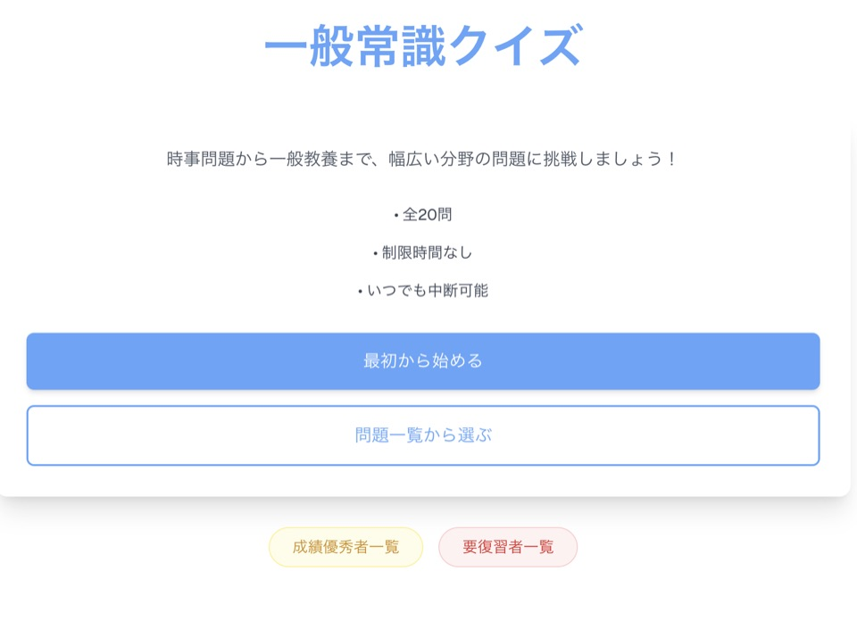
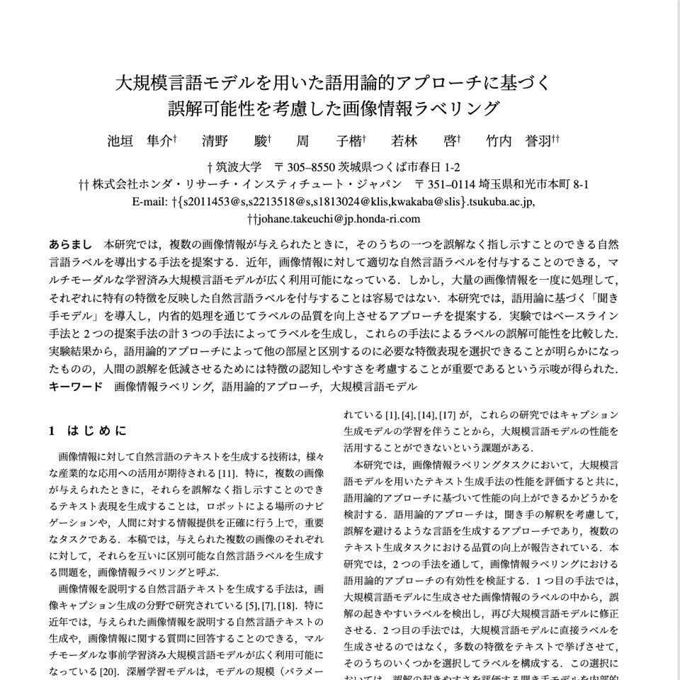

Java
静的型付け言語の基礎はすべて Java で身につけました。Minecraft サーバープラグインを数十本書く中で、 「どう設計すれば後から機能を足しやすいか」を実地で学んできました。
- interface
- 抽象クラス
- 継承
- オーバーライド
- カプセル化
- アクセス修飾子 / スコープ
- ポリモーフィズム
https://seisyun9665.github.io/portfolio/
Software Engineer / Yokohama
Java で型とオブジェクト指向を覚え、TypeScript / Vue でプロダクトを触り、 いまはクラウドとモバイルに手を広げているエンジニアです。 「仕組みで回るようにする」のが好きで、 友人と遊ぶゲームサーバーも Terraform と GitHub Actions で管理しています。
$ whoami shun-seino $ cat stack.yml lang: [Java, TypeScript, Swift, Python] front: [Vue, React, Next.js] cloud: [AWS, OCI] iac: [AWS CDK, Terraform] ci: [GitHub Actions] $ uptime --java 5+ years, load: ▇▇▇▇▇▌
一関高専で情報・ソフトウェアを学び、筑波大学情報学群に編入。大学院（情報学学位プログラム）では LLM を用いた深層学習モデルの解釈性に関する研究を行い、2026年3月に修士課程を修了しました。
プログラミングの入り口は Minecraft。サーバー向けプラグインを Java で書き始めたのがきっかけで、 そこから Web、クラウド、モバイルへと興味が広がっていきました。 「遊べるものを作る」ことと「それを安定して動かし続ける仕組みを作る」ことの両方が好きです。
2026年4月からは KDDIアジャイル開発センターでエンジニアとして働いています。
新卒研修（約3か月）ではスクラムによるチーム開発で学習継続支援アプリを制作し、 AWS CDK（TypeScript）でインフラをコード化して CI/CD を整備。GitHub Projects 運用や議事録自動化など、チーム開発環境づくりも主導しました。 チーム開発の振り返りはnote の記事として中心になって執筆しています。
2026年7月からは金融・決済領域の大規模スマートフォンアプリの保守運用チームに所属。iOS アプリの不具合修正・改善を中心に担当し、 仕様書作成 → テスト設計 → 実装 → レビュー → 試験 → マージまでを、生成AIを活用した仕様駆動開発で一貫して進めています。 お金を扱うアプリなので、実装より先に仕様とテスト設計を固めることを重視しています。
約1年以上にわたり、社内勤怠アプリの開発に参加。TypeScript を中心に Vue.js / Laravel、React / Next.js を使った機能実装を担当しました。
「この画面に色分け表示を追加する」といったチケット単位で、Figma のデザイン再現 → API の繋ぎ込み → push → レビュー → 改善 → 本番適用までを一通り回すサイクルを継続。 実際に社員が毎日使うアプリを、レビューを受けながら少しずつ良くしていく経験を積みました。
修士論文「大規模言語モデルを用いた対比因子ラベル生成手法に関する研究」。 テキスト集合間の差異を LLM に自然言語ラベルとして生成させるタスクを提案し、 複数データセット・モデル・Few-shot 条件の計36条件を自動化パイプラインで評価しました。 学部の卒業研究では DEIM2024 学生プレゼンテーション賞を受賞。
静的型付け言語の基礎はすべて Java で身につけました。Minecraft サーバープラグインを数十本書く中で、 「どう設計すれば後から機能を足しやすいか」を実地で学んできました。
Sky での約1年以上のインターンで、社内勤怠アプリを Vue / Laravel・React / Next.js で実装。Figma 再現から API 繋ぎ込み、レビュー対応まで経験。
業務で iOS を担当するようになり集中的に学習。大規模アプリの Swift コードを読んで修正できるところまで来ました。Android（Kotlin / Java）の調査も対応。
AWS Certified Cloud Practitioner 取得。EC2 でのサーバー運用から始め、現在は OCI でゲームサーバーを運用保守。Bot 攻撃を受けた経験から、プロキシ経由でしかゲームサーバーに入れない構成にしています。
新卒研修のチーム開発で AWS CDK（TypeScript）によるインフラのコード化と CI/CD を整備。個人でも OCI の構成を Terraform で管理し、変更差分を GitHub Actions で自動チェックして危険な変更を通知する仕組みを自作。
研究では Python で LLM 実験パイプラインを構築。個人開発では Firebase Functions + Firestore で API を実装し、単体テストも整備。
Certification
AWS Certified Cloud Practitioner（CLF-C02）2026.05
「友達と遊ぶ Minecraft サーバーを自分で立てたい」から始まった、クラウドとの付き合い方の変遷です。
STEP 1
AWS の12か月無料期間を使い、EC2 インスタンス上に Minecraft サーバーを構築・運用。インスタンスの起動・停止、ストレージ、アクセス管理など、クラウドの基本を実際に動かしながら覚えました。
STEP 2
無料期間の終了を機に Oracle Cloud Infrastructure へ移行。VCN・サブネット、セキュリティリストでのポート開放、OS のファイアウォールなどを一から設計し、友人たちが日常的に遊ぶサーバーとして運用保守を続けています。
STEP 3
公開していたサーバーが Bot による攻撃を受けたことをきっかけに構成を見直し。ゲームサーバーの前段にプロキシサーバーを置き、ゲームサーバーにはプロキシ経由でしか入れないようにネットワークを絞りました。外部に晒す面を最小限にしています。
STEP 4
OCI の構成は Terraform でコード化し GitHub で履歴管理。自動バックアップも整備し、サイズの大きいワールドデータだけはコードと分けて管理しています。PR ごとの差分チェックと危険な変更の通知も GitHub Actions で自動化しました。
OCI VCN
ゲームを中心に、個人・チームで作ってきたもの。

Minecraft RPG サーバー / チーム開発
Minecraft 上で遊べるオンライン RPG。Java でゲーム本体（プラグイン）と課金システムを実装し、Firebase Functions + Firestore の API と連携。React + TypeScript で公式サイトも制作しました。

学習継続支援アプリ / 新卒研修チーム開発
「学んだことが星になり、繋ぐと自分だけの星座ができる」学習継続アプリ。エンジニア4名+デザイナー1名のスクラムで開発し、AWS CDK による IaC と CI/CD を整備。







研究 / 機械学習・NLP
高専ではランキング予測モデル（精度90%超）、学部では誤解のない画像キャプション生成、大学院では LLM による概念ラベル生成を研究。